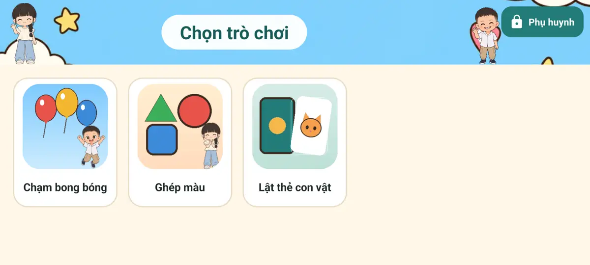
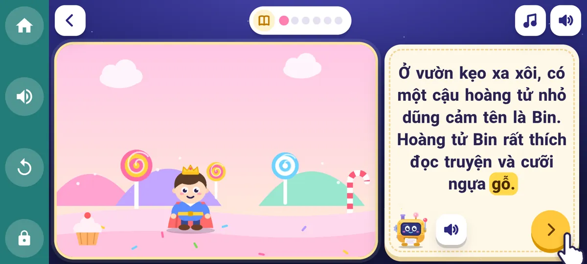
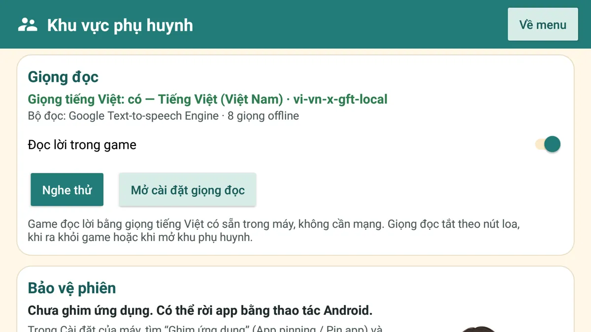

Sân chơi Game Sáng tạo & Giáo dục cho Bé
AI Mở Studio mang đến không gian trò chơi tương tác offline hoàn toàn miễn phí cho bé: không quảng cáo, không theo dõi, không cần internet. Hỗ trợ giọng đọc tiếng Việt sinh động giúp bé vừa học vừa chơi an toàn.
AI Mở Studio — Dự án này là gì?
Một nền tảng trò chơi an toàn biến máy tính và điện thoại thành “máy chơi game thông minh” cho bé. Toàn bộ game chạy dưới dạng HTML offline, hỗ trợ giọng đọc tiếng Việt tự nhiên và không cần kết nối mạng.
Offline, không quảng cáo
Hoàn toàn không cần Internet. Game chạy từ bộ nhớ máy; mọi liên kết, quảng cáo hay yêu cầu ra ngoài đều bị chặn.
An toàn tuyệt đối cho bé
Cài đặt nằm sau mã PIN phụ huynh. Dùng cùng “Ghim ứng dụng” của Android để bé chỉ ở trong app an toàn.
Đọc lời tiếng Việt
Tất cả game đều có giọng đọc tiếng Việt tự nhiên, giúp bé học chữ, số và phát âm chuẩn xác.
Thêm game = chép thư mục
Mỗi game là một thư mục HTML độc lập. Chép vào máy là hệ thống tự nhận diện, không cần cài đặt phức tạp.
Sáng tạo cùng AI Mở
Toàn bộ 65 trò chơi và nền tảng được thiết kế, tối ưu và kiểm thử cùng AI với chất lượng cao nhất.



Chơi ngay trên trình duyệt
Chạm Chơi để mở game trong thẻ mới. Tiến trình của bé được lưu trong trình duyệt này. Trên điện thoại nên xoay ngang. Muốn chép game vào app thì bấm nút tải bên cạnh.
Tải về
App Android: Kids Games Player 1.1.0
Cài lên điện thoại Android 8 trở lên. Đã có bản cũ thì cứ cài đè, không cần gỡ: PIN, danh sách game và tiến trình của bé vẫn còn.
⬇ Tải APKMã kiểm tra (SHA-256)
File APK: —
Chứng chỉ ký: —
Mọi bản cập nhật đều ký bằng cùng chứng chỉ này. Danh sách đầy đủ: SHA256SUMS.txt.
Game để chép vào app
Giải nén, bên trong là thư mục KidsGames. Chép các thư mục game trong đó vào thư mục KidsGames trên điện thoại.
Từng game riêng lẻ: nút ⬇ trên mỗi thẻ game ở mục Chơi game.
Mã nguồn và tài liệu
Toàn bộ mã nguồn app, game, công cụ và các bản mô tả đã giao cho AI.
- Xem repo trên GitHub (nút Code → Download ZIP để tải hết)
- README.md: giới thiệu cho người đọc
- AI_PLAYBOOK.md: tài liệu cho AI
Cài cho bé trong 10 phút
- Tải APK ở mục trên, mở trên điện thoại, cho phép cài ứng dụng từ nguồn này.
- Mở app, tạo PIN phụ huynh 6 số.
- Dùng app Files tạo thư mục
KidsGamestrong bộ nhớ máy. Trong app bấm Chọn thư mục →KidsGames→ Cho phép. - Chép game: giải nén gói game, chép các thư mục game vào
KidsGames. Game hiện trong menu sau khoảng 20 giây. - Giọng tiếng Việt: giữ nút Phụ huynh 2 giây → nhập PIN → Giọng đọc. Nếu báo chưa có giọng: Mở cài đặt giọng đọc → Google → Cài đặt dữ liệu giọng nói → Tiếng Việt (tải khoảng 9 MB một lần). Bấm Nghe thử.
- Bật Ghim ứng dụng trong Cài đặt của máy, rồi trong khu phụ huynh bấm Bắt đầu phiên cho bé.
Cập nhật app: mở APK mới và chọn Cập nhật. Đừng gỡ app cũ, vì gỡ sẽ xóa PIN, danh sách game và tiến trình của bé. Hướng dẫn đầy đủ: README_VI.md.
Dự án được làm cùng AI thế nào
Bố mẹ không viết dòng mã nào. App, 64 game, trang web này và toàn bộ kiểm thử do AI viết, theo một cách làm dùng lại được cho game khác, công cụ nội bộ hay sản phẩm thương mại.
- Viết đặc tả. Bố mẹ cùng AI viết một tài liệu thiết kế dài (“bible”) chốt mọi quyết định: Kotlin + WebView, offline, mỗi game một vùng riêng, PIN, ghim ứng dụng.
- AI xây app. Giao bible cho Claude Code với câu “đọc và làm từ đầu đến cuối”. AI tự viết mã, test trên emulator Android 8 và Android 17, ký APK, báo cáo trung thực PASS / FAIL / chưa chạy.
- AI làm game theo lô. Mỗi file prompt mô tả 10 game và tiêu chuẩn chung: dễ thương, không phạt, mở sẵn mọi màn, tự kiểm thử ở 3 cỡ màn hình. Nhiều phiên AI chạy song song.
- Thử trên điện thoại thật và phát hiện game có giọng đọc khi mở bằng Chrome nhưng im lặng trong app.
- Sửa bằng một bản handover mô tả vấn đề, quyết định và kiểm thử bắt buộc. AI làm bản 1.1.0 trọn vẹn, kể cả thử cài đè trên emulator.
Hướng dẫn đầy đủ cho người lớn và vibe coder: 9 nguyên tắc làm việc với AI, cách dựng player và game, sửa lỗi bằng handover, áp dụng cho dự án của bạn (kể cả khi muốn bán), 7 prompt mẫu sao chép được.
Đọc: Làm phần mềm cùng AI →Muốn làm tiếp hoặc làm lại dự án?
Tải repo về, mở Claude Code (hoặc một AI lập trình khác) tại thư mục gốc rồi gõ:
Đọc AI_PLAYBOOK.md rồi cùng tôi làm tiếp dự án này. Hỏi tôi trước khi làm việc gì không thể hoàn tác.Các bản mô tả đã dùng nằm trong specs/; prompt làm game theo lô nằm trong games/ (Bo game 2…5.md).
Hỏi đáp
Chơi trên trang này có cần mạng không?
Cần mạng để mở trang. 50 game trong bộ 1–5 tải font chữ từ Google Fonts, nên trình duyệt sẽ gửi yêu cầu tới máy chủ của Google. Các game theo SDK và game mẫu chỉ dùng file trong repo. Trang này không có quảng cáo, không đếm lượt truy cập, không đặt cookie.
Trong app Android thì không dùng mạng: font không tải được, game tự dùng font của máy.
Tiến trình của bé được lưu ở đâu?
Trên web: trong bộ nhớ của trình duyệt đang dùng, mỗi game một ngăn riêng. Xóa dữ liệu trang web là mất. Trong app: lưu trong app, phụ huynh xóa được từng game ở khu phụ huynh.
Game có đọc lời khi chơi trên web không?
Có, nếu trình duyệt có giọng tiếng Việt (Chrome trên Android, Windows, macOS thường có). Không có giọng thì game vẫn chơi được, chỉ không đọc.
Điện thoại Android 8 cũ có chơi được không?
App chạy từ Android 8. Nhưng nếu “Android System WebView” của máy chưa được cập nhật (vẫn là Chromium 69), 16/51 game của bộ 1–5 không mở được và bố cục các game còn lại có thể lệch. Cập nhật Android System WebView hoặc Chrome (bản 87 trở lên) từ Play Store là hết. Game có nhãn Android 8 chạy tốt cả trên WebView cũ.
Android báo “ứng dụng không rõ nguồn gốc”?
Vì APK không lấy từ Play Store. Cho phép cài từ trình duyệt hoặc app Files một lần là được. Muốn chắc file không bị thay đổi, so mã SHA-256 ở mục Tải về.
Làm sao thêm game mới?
Không cần APK mới. Nhờ AI viết một game HTML (một thư mục có index.html và icon.png), chép thư mục vào KidsGames là xong. Muốn game hiện trên trang này: thêm một dòng vào site/catalog.json rồi chạy python tools/build_site.py. Chi tiết trong AI_PLAYBOOK.md.